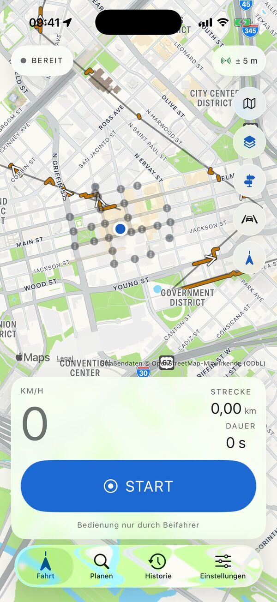
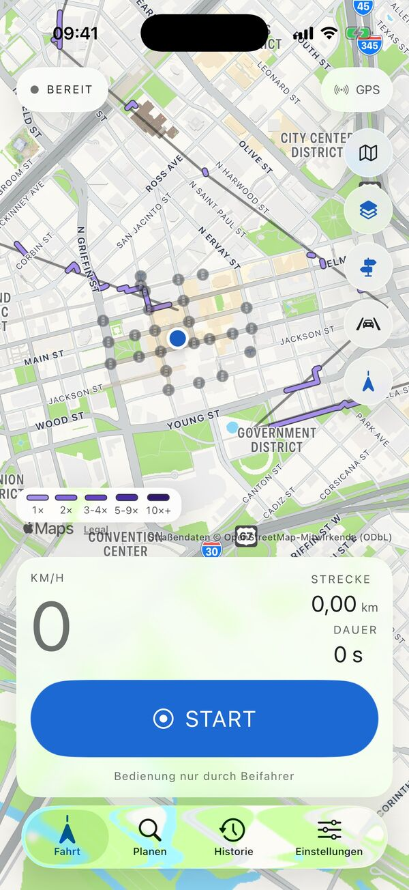
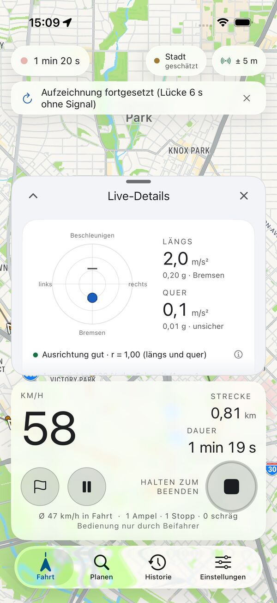
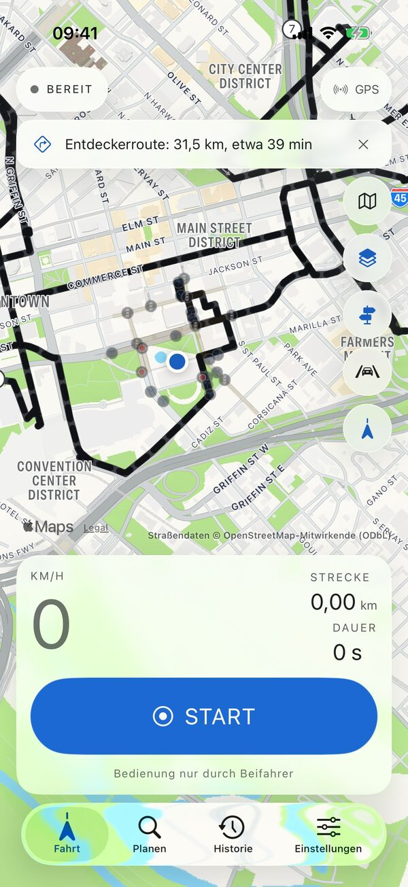
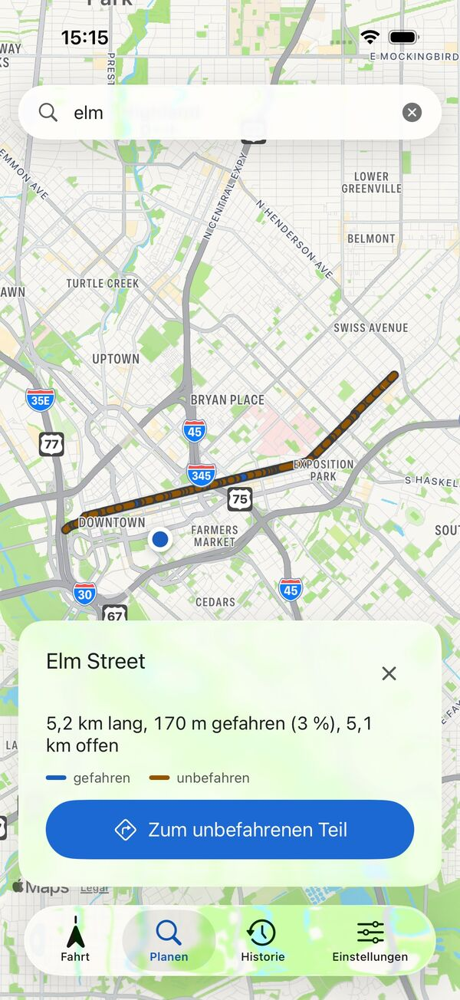
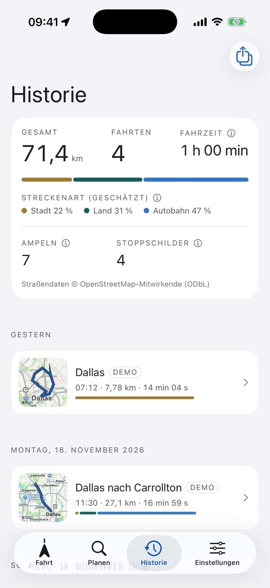
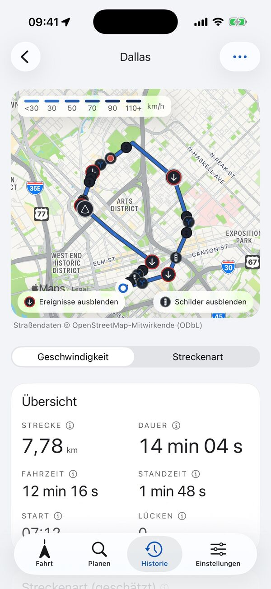
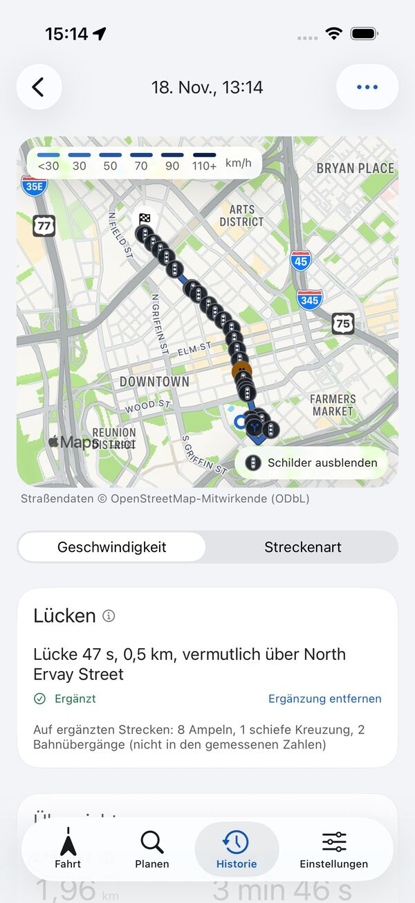

Spur
iPhone app iOS 26 source published to read
Know which roads you have already driven.
Spur records every drive in full GPS and motion detail. Afterwards each road on the map shows whether you drove it one way or both, and the planner sends you down the ones you have not.
Read the source Watch the demo
There is no store release. The code is public to read; all rights reserved.
Recorded, not mocked up
Sixty-three seconds in the simulator
The recording comes from the app running in the iOS simulator with a simulated drive. You see the live motion panel, the heatmap, an automatic pause, a planned discovery loop, a filled GPS gap and the street search.
FahrtWhile you drive
Roads by direction
Amber one way, green both ways
After every drive Spur matches the trip to the road network and colours each road by direction: amber where you drove it one way, green once you have driven it both ways. Arrows along the line show the direction. Green roads also carry a dark centre stripe, so the two differ in shape and not only in colour.
The two carriageways of a divided road, frontage roads included, count as one road. Drive out on one and back on the other and both turn green, each with its own arrow.
Switch the layer to Häufigkeit and the same roads show how often you drove them, from once to ten times or more.
The layer switch works. In the app it sits in the map menu, next to the map type.
Motion sensing
Braking, cornering and bumps
The motion sensors measure braking, acceleration, cornering, bumps and the road surface. Spur works out by itself how the phone sits in the car, shows the values live and keeps them with each trip.
Traffic signals, stop signs, skewed junctions and speed limits come from OpenStreetMap and are counted along every trip.
GPS gaps
A gap stays a gap
When the signal drops in a tunnel or a dead zone, the trip shows the gap as a gap: a faint dashed line, not an invented road. Spur suggests the road you most likely took, drawn as dots, and you accept or reject each suggestion.
Raw fixes are stored exactly as the phone reports them and are never thinned. Accepting a suggestion adds to the trip; it does not change what was recorded.
Lücke 47 s, 0,5 km, vermutlich über Mill Street
Both buttons work. The street name is made up, like the map.
Automatic pause
Parked is a pause, a jam is not
A long stop in a car park or on a side street becomes a pause on its own, and the trip carries on when you drive off. A long stop on a highway or a main road is traffic, so the recording keeps going.
Spur decides from the location and the road data on the phone. Pause time counts neither as driving time nor as standing time.
-
Car park, 6 minOff the road: paused from the start of the stop
-
Driving offThe trip continues by itself
-
Highway jam, 6 minA main road: still recording
18 min 40 s
PlanenBefore you drive
Discovery routes
Routes over roads you have not driven
In the Planen tab you search a place or a street and plan a loop, or a route to a goal, that favours roads you have not driven yet. The numbered points are its waypoints, in order.
The route shows on the live map while you drive it. It also opens in a maps app or leaves as a GPX file.
Street search
How much of a street is left
Search a street by name and Spur shows how long it is, how much of it you have driven and how much is still open. One button takes you to the nearest part you have not driven.
HistorieAfter you drive
History and exports
Every trip stays, and every trip exports
The history keeps each trip with its distance, time, estimated road types, traffic signals and stop signs, and adds them up across all trips.
A trip exports as GPX, CSV, GeoJSON or JSON. The raw motion samples export on their own, and all trips go out together as one ZIP.
From the simulator
Screens from the app
Unframed captures of the app. Where a dark capture exists, it follows your system appearance, the way the app follows its map style. The interface is in German.

Roads driven, by direction

How often you drove each road

Live motion while recording

A discovery loop on the live map

Street search with the driven share

Trip history

One trip in detail

A GPS gap with its suggestion
EinstellungenPrivacy, code and license
Privacy
Your trips stay on the phone
There is no account, no server, no analytics and no third-party code. Two kinds of request leave the device, and neither carries your trips.
Stays on the phone
- Every trip, with its raw GPS fixes and motion samples
- The history and the roads you have driven
Leaves the device
- Map tiles, place search, driving times and street names, requested through MapKit from the map service built into the phone
- Road data for the map tiles you drive in, from public OpenStreetMap (Overpass) servers. A request carries only the tile's bounding box, never your fixes or your track.
How it is built
Platform frameworks, pure logic, many tests
Swift 6 with strict concurrency, SwiftUI, MapKit, CoreLocation, CoreMotion, ActivityKit and WidgetKit. There are no packages.
The domain logic is pure: statistics, map matching, road coverage, the route planner and the exports. A physics suite must give identical results in debug and optimized builds, and UI tests drive the real app through a full recording, export, planning and pause flow.
Build and test
xcodegen generate
xcodebuild -project Spur.xcodeproj -scheme Spur \
-destination 'platform=iOS Simulator,name=iPhone 17 Pro' build testNeeds Xcode 26 with an iOS 26 simulator and XcodeGen. Without the optional offline road pack, road data loads live from OpenStreetMap.
License
All rights reserved
The source is published to be read. It is not licensed for use, copying or redistribution. Issues are welcome; pull requests are not accepted.
Road data © OpenStreetMap contributors, available under the Open Database License.